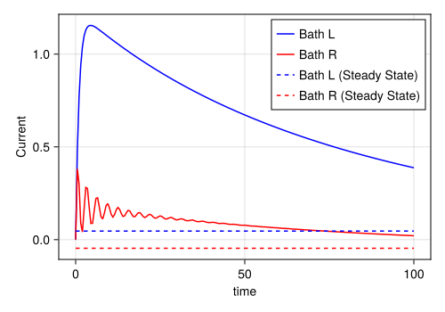

Electronic Current
Inspirations taken from qutip documentation.
Introduction
In this example, we demonstrate how to compute an environmental observable: the electronic current. For further detailed discussions of calculating the electronic current using HierarchicalEOM.jl, we recommend to read the article (Huang et al. 2023).
Hamiltonian
We consider a single-level charge system coupled to two [left (L) and right (R)] fermionic reservoirs (\(\textrm{f}\)). The total Hamiltonian is given by \(H_{\textrm{T}}=H_\textrm{s}+H_\textrm{f}+H_\textrm{sf}\), where each terms takes the form
\[ \begin{aligned} H_{\textrm{s}} &= \epsilon d^\dagger d,\\ H_{\textrm{f}} &=\sum_{\alpha=\textrm{L},\textrm{R}}\sum_{k}\epsilon_{\alpha,k}c_{\alpha,k}^{\dagger}c_{\alpha,k},\\ H_{\textrm{sf}} &=\sum_{\alpha=\textrm{L},\textrm{R}}\sum_{k}g_{\alpha,k}c_{\alpha,k}^{\dagger}d + g_{\alpha,k}^* d^{\dagger}c_{\alpha,k}. \end{aligned} \]
Here, \(d\) \((d^\dagger)\) annihilates (creates) an electron in the system and \(\epsilon\) is the energy of the electron. Furthermore, \(c_{\alpha,k}\) \((c_{\alpha,k}^{\dagger})\) annihilates (creates) an electron in the state \(k\) (with energy \(\epsilon_{\alpha,k}\)) of the \(\alpha\)-th reservoir.
Now, we need to build the system Hamiltonian and initial state with the package QuantumToolbox.jl to construct the operators.
Construct bath objects
We assume the fermionic reservoir to have a Lorentzian-shaped spectral density, and we utilize the Padé decomposition. Furthermore, the spectral densities depend on the following physical parameters:
- the coupling strength \(\Gamma\) between system and reservoirs
- the band-width \(W\)
- the product of the Boltzmann constant \(k\) and the absolute temperature \(T\) : \(kT\)
- the chemical potential \(\mu\)
- the total number of exponentials for the reservoir \(2(N + 1)\)
Γ = 0.01
W = 1
kT = 0.025851991
μL = 1.0 # Left bath
μR = -1.0 # Right bath
N = 2
bath_L = Fermion_Lorentz_Pade(d, Γ, μL, W, kT, N)
bath_R = Fermion_Lorentz_Pade(d, Γ, μR, W, kT, N)
baths = [bath_L, bath_R]2-element Vector{FermionBath}:
HierarchicalEOM.FermionBath object with 6 terms.
HierarchicalEOM.FermionBath object with 6 terms.Construct HEOMLS matrix
Preparing block matrices for HEOM Liouvillian superoperator (using 4 threads)...
Progress: [ ] 0.1% --- Elapsed Time: 0h 00m 01s (ETA: 0h 26m 25s)Progress: [==============================] 100.0% --- Elapsed Time: 0h 00m 01s (ETA: 0h 00m 00s)
Constructing matrix...[DONE]Fermion type HEOMLS matrix acting on even-parity ADOs
system dims = [2]
number of ADOs N = 1586
data =
MatrixOperator(6344 × 6344)Solve time evolution of ADOs
Solving time evolution for ADOs by Ordinary Differential Equations method...
Progress: [==============================] 100.0% --- Elapsed Time: 0h 00m 00s (ETA: 0h 00m 00s)201-element Vector{ADOs}:
1586 Auxiliary Density Operators with even-parity and (system) dims = [2]
1586 Auxiliary Density Operators with even-parity and (system) dims = [2]
1586 Auxiliary Density Operators with even-parity and (system) dims = [2]
1586 Auxiliary Density Operators with even-parity and (system) dims = [2]
1586 Auxiliary Density Operators with even-parity and (system) dims = [2]
1586 Auxiliary Density Operators with even-parity and (system) dims = [2]
1586 Auxiliary Density Operators with even-parity and (system) dims = [2]
1586 Auxiliary Density Operators with even-parity and (system) dims = [2]
1586 Auxiliary Density Operators with even-parity and (system) dims = [2]
1586 Auxiliary Density Operators with even-parity and (system) dims = [2]
⋮
1586 Auxiliary Density Operators with even-parity and (system) dims = [2]
1586 Auxiliary Density Operators with even-parity and (system) dims = [2]
1586 Auxiliary Density Operators with even-parity and (system) dims = [2]
1586 Auxiliary Density Operators with even-parity and (system) dims = [2]
1586 Auxiliary Density Operators with even-parity and (system) dims = [2]
1586 Auxiliary Density Operators with even-parity and (system) dims = [2]
1586 Auxiliary Density Operators with even-parity and (system) dims = [2]
1586 Auxiliary Density Operators with even-parity and (system) dims = [2]
1586 Auxiliary Density Operators with even-parity and (system) dims = [2]Solve stationary state of ADOs
Calculate current
Within the influence functional approach, the expectation value of the electronic current from the \(\alpha\)-fermionic bath into the system can be written in terms of the first-level-fermionic (\(n=1\)) auxiliary density operators, namely
\[ \langle I_\alpha(t) \rangle =(-e) \frac{d\langle \mathcal{N}_\alpha\rangle}{dt}=i e \sum_{q\in\textbf{q}}(-1)^{\delta_{\nu,-}} ~\textrm{Tr}\left[d^{\bar{\nu}}\rho^{(0,1,+)}_{\vert \textbf{q}}(t)\right], \]
where \(e\) represents the value of the elementary charge, and \(\mathcal{N}_\alpha=\sum_k c^\dagger_{\alpha,k}c_{\alpha,k}\) is the occupation number operator for the \(\alpha\)-fermionic bath.
Given an ADOs, we provide a function which calculates the current from the \(\alpha\)-fermionic bath into the system with the help of Hierarchy Dictionary.
# `bathIdx`:
# - 1 means 1st bath (bath_L)
# - 2 means 2nd bath (bath_R)
function Ic(ados, M::M_Fermion, bathIdx::Int)
# the hierarchy dictionary
HDict = M.hierarchy
# we need all the indices of ADOs for the first level
idx_list = HDict.lvl2idx[1]
I = 0.0im
for idx in idx_list
ρ1 = ados[idx] # 1st-level ADO
# find the corresponding bath index (α) and exponent term index (k)
nvec = HDict.idx2nvec[idx]
for (α, k, _) in getIndexEnsemble(nvec, HDict.bathPtr)
if α == bathIdx
exponent = M.bath[α][k]
if exponent.types == "fA" # fermion-absorption
I += tr(exponent.op' * ρ1)
elseif exponent.types == "fE" # fermion-emission
I -= tr(exponent.op' * ρ1)
end
break
end
end
end
eV_to_Joule = 1.60218E-19 # unit conversion
# (e / ħ) * I [change unit to μA]
return 1.519270639695384E15 * real(1im * I) * eV_to_Joule * 1E6
endIc (generic function with 1 method)steady current
Is_L = ones(length(tlist)) .* Ic(ados_steady, M, 1)
Is_R = ones(length(tlist)) .* Ic(ados_steady, M, 2)201-element Vector{Float64}:
-0.04632854331413624
-0.04632854331413624
-0.04632854331413624
-0.04632854331413624
-0.04632854331413624
-0.04632854331413624
-0.04632854331413624
-0.04632854331413624
-0.04632854331413624
-0.04632854331413624
⋮
-0.04632854331413624
-0.04632854331413624
-0.04632854331413624
-0.04632854331413624
-0.04632854331413624
-0.04632854331413624
-0.04632854331413624
-0.04632854331413624
-0.04632854331413624time evolution current
plot the result
fig = Figure(size = (500, 350))
ax = Axis(fig[1, 1], xlabel = "time", ylabel = "Current")
lines!(ax, tlist, Ie_L, label = "Bath L", color = :blue, linestyle = :solid)
lines!(ax, tlist, Ie_R, label = "Bath R", color = :red, linestyle = :solid)
lines!(ax, tlist, Is_L, label = "Bath L (Steady State)", color = :blue, linestyle = :dash)
lines!(ax, tlist, Is_R, label = "Bath R (Steady State)", color = :red, linestyle = :dash)
axislegend(ax, position = :rt)
fig
Version Information
__
/ \
__ __ __ \__/ __
| | | | / \ / \
| | | | ______ ______ \__/_ _\__/
| |___| |/ __ \ / __ \ / ' \/ \
| ___ | |__) | / \ | _ _ |
| | | | ____/| ( ) | / \ / \ |
| | | | |____ | \__/ | | | | | |
|__| |__|\______) \______/|__| |_| |_|
Julia framework for Hierarchical Equations of Motion
≡≡≡≡≡≡≡≡≡≡≡≡≡≡≡≡≡≡≡≡≡≡≡≡≡≡≡≡≡≡≡≡≡≡≡≡≡≡≡≡≡≡≡≡≡≡≡≡≡≡≡≡
Copyright © QuTiP team 2023 and later.
Lead developer : Yi-Te Huang
Other developers:
Simon Cross, Neill Lambert, Po-Chen Kuo and Shen-Liang Yang
Package information:
====================================
Julia Ver. 1.11.3
HierarchicalEOM Ver. 2.4.2
QuantumToolbox Ver. 0.25.2
SciMLOperators Ver. 0.3.12
LinearSolve Ver. 2.39.0
OrdinaryDiffEqCore Ver. 1.15.1
System information:
====================================
OS : Linux (x86_64-linux-gnu)
CPU : 4 × AMD EPYC 7763 64-Core Processor
Memory : 15.615 GB
WORD_SIZE: 64
LIBM : libopenlibm
LLVM : libLLVM-16.0.6 (ORCJIT, znver3)
BLAS : libopenblas64_.so (ilp64)
Threads : 4 (on 4 virtual cores)